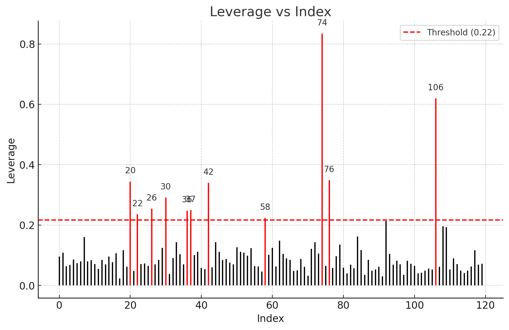

Descriptive statistics are a set of brief descriptive coefficients that summarize a given data set, which can be either a representation of the entire population or a sample of a population. These statistics are broken down into measures of central tendency and measures of variability (spread).
Measures of Central Tendency: These are used to describe the center of a data set. The most common measures are:
Measures of Variability (Spread): These describe the spread or dispersion within a data set. Common measures include:
Other Descriptive Statistics:
Descriptive statistics provide simple summaries about the sample and the measures. They form the basis of virtually every quantitative analysis of data.
| ant_exclusion | stem_diameter | height | canopy | dw_healthy | dw_infect | dw_total | fw_pulb | fw_seeds | fw_total | ab_fl_op | ab_fl_cl | ab_fl | |
| count | 120 | 120 | 120 | 120 | 120 | 120 | 120 | 120 | 120 | 120 | 120 | 120 | 120 |
| mean | 0.5 | 27.0966 | 293 | 0.329775 | 1054.78 | 149.55 | 1203.53 | 16239.7 | 5404.45 | 21617.6 | 1550.13 | 3910.92 | 5452.61 |
| std | 0.502096 | 5.30599 | 34.6056 | 0.173708 | 750.21 | 146.953 | 824.982 | 10796.7 | 3541.42 | 14236.2 | 904.836 | 2230.83 | 3106.13 |
| min | 0 | 15.7375 | 223.75 | 0.015 | 0 | 0 | 0 | 0 | 0 | 0 | 241 | 741 | 1114 |
| 25% | 0 | 23.375 | 270.375 | 0.18125 | 447.25 | 46.75 | 573.25 | 8083.5 | 2824.25 | 11107.2 | 905.25 | 2277.5 | 3178.25 |
| 50% | 0.5 | 26.7125 | 287.875 | 0.344167 | 939.5 | 116 | 1135 | 14767 | 4983 | 19292 | 1360 | 3440.5 | 4798 |
| 75% | 1 | 30.3656 | 313.188 | 0.449167 | 1536 | 216.5 | 1717.5 | 21869.2 | 7544.5 | 29008.2 | 2018.75 | 5053.25 | 7006.75 |
| max | 1 | 46.6 | 399.5 | 0.708333 | 3045 | 920 | 3500 | 60787 | 17025 | 77812 | 4369 | 12469 | 16501 |
The summary statistics provided in the table give us a snapshot of the dataset's characteristics. Here's a breakdown of what each row represents:
Count: This indicates the number of observations in each column. In this dataset, each column has 120 observations.
Mean: The average value of each column. It provides a central value for the data. For example, the mean of the stem_diameter is approximately 27.10.
Standard Deviation (std): This measures the amount of variation or dispersion in the data. A higher standard deviation indicates more spread out data. For instance, the fw_pulb has a standard deviation of about 10796.7, indicating a wide range of values.
Minimum (min): The smallest value in each column. For example, the minimum height is 223.75.
25th Percentile (25%): Also known as the first quartile, it indicates that 25% of the data points are below this value. For example, 25% of the canopy values are below 0.18125.
50th Percentile (50%): Also known as the median, it divides the data into two equal halves. For example, the median dw_healthy is 939.5.
75th Percentile (75%): Also known as the third quartile, it indicates that 75% of the data points are below this value. For example, 75% of the fw_seeds values are below 7544.5.
Maximum (max): The largest value in each column. For example, the maximum ab_fl is 16501.
These statistics help us understand the distribution, central tendency, and variability of the data, providing insights into the dataset's overall structure.
What are histograms?
A histogram is a graphical representation of the distribution of numerical data. It is an estimate of the probability distribution of a continuous variable and was first introduced by Karl Pearson. A histogram is similar to a bar graph in structure, but it groups numbers into ranges (bins) and displays the frequency of data points within each range.
What are the components of a histogram?
How do I interpret a histogram?
Provide histograms for every variable of the dataset.
Let's create histograms for each variable in the dataset using the specified style.
Here are the histograms for each variable in the dataset. Each histogram shows the distribution of data points for a specific variable, with the x-axis representing the variable's values and the y-axis representing the frequency of those values. The gray bars indicate the frequency of data points within each bin, and the smooth line (KDE) represents the estimated probability density function of the variable. By examining these histograms, you can gain insights into the distribution, central tendency, and spread of each variable in the dataset.
What are boxplots?
A boxplot, also known as a whisker plot, is a standardized way of displaying the distribution of data based on a five-number summary: minimum, first quartile (Q1), median, third quartile (Q3), and maximum. Boxplots are useful for identifying outliers and for comparing distributions between different datasets.
What are the components of a boxplot?
How do I interpret a boxplot?
Provide boxplots for every variable of the dataset.
Let's create boxplots for each variable in the dataset using the specified style.
Here are the boxplots for each variable in the dataset. Each boxplot provides a visual summary of the distribution of data points for a specific variable. The central box represents the interquartile range (IQR), with a line inside indicating the median. The whiskers extend to the smallest and largest values within 1.5 times the IQR, and any points outside the whiskers are considered outliers. By examining these boxplots, you can quickly assess the central tendency, spread, and potential outliers for each variable in the dataset.
What are ECDF plots?
An Empirical Cumulative Distribution Function (ECDF) plot is a graphical representation of the cumulative distribution of a dataset. It shows the proportion or count of observations falling below each unique value in a dataset. ECDF plots are useful for visualizing the distribution of data and comparing different datasets.
What are the components of an ECDF plot?
How do I interpret an ECDF plot?
Provide ECDF plots for every variable of the dataset.
Let's create ECDF plots for each variable in the dataset using the specified style.
Here are the ECDF plots for each variable in the dataset. Each plot shows the cumulative distribution of data points for a specific variable. The x-axis represents the values of the variable, while the y-axis represents the cumulative proportion of observations that are less than or equal to each value. By examining these ECDF plots, you can gain insights into the distribution and spread of each variable, as well as compare the distributions of different variables.
What are QQ plots?
A Quantile-Quantile (QQ) plot is a graphical tool to help assess if a dataset follows a particular distribution, most commonly the normal distribution. It compares the quantiles of the dataset against the quantiles of a theoretical distribution. If the data follows the distribution, the points will approximately lie on a straight line.
What are the components of a QQ plot?
How do I interpret a QQ plot?
Provide QQ plots for every variable of the dataset.
Let's create QQ plots for each variable in the dataset using the specified method.
Here are the QQ plots for each variable in the dataset. Each plot compares the quantiles of the dataset against the quantiles of a normal distribution. The x-axis represents the theoretical quantiles, while the y-axis represents the ordered values of the dataset. The red line is the reference line where the points would lie if the data perfectly followed a normal distribution. By examining these QQ plots, you can assess how closely each variable follows a normal distribution and identify any deviations or outliers.
Multiple linear regression is a statistical technique used to model the relationship between a dependent variable and two or more independent variables. The goal is to find the linear equation that best predicts the dependent variable based on the independent variables.
The multiple linear regression model can be represented as:
\( y_i = \beta_0 + \beta_1 x_{i1} + \beta_2 x_{i2} + \cdots + \beta_p x_{ip} + \epsilon_i \)
Where:
Linearity: The relationship between the dependent variable and the independent variables is linear. This means that the change in the dependent variable is proportional to the change in the independent variables.
\( y_i = \beta_0 + \beta_1 x_{i1} + \beta_2 x_{i2} + \cdots + \beta_p x_{ip} + \epsilon_i \)
Independence: The observations are independent of each other. This means that the value of the dependent variable for one observation is not influenced by the value of the dependent variable for another observation.
Homoscedasticity: The variance of the error terms (\( \epsilon_i \)) is constant across all levels of the independent variables. This means that the spread of the residuals should be the same for all values of the independent variables.
\( \text{Var}(\epsilon_i) = \sigma^2 \)
Normality: The error terms (\( \epsilon_i \)) are normally distributed. This assumption is important for hypothesis testing and constructing confidence intervals.
\( \epsilon_i \sim N(0, \sigma^2) \)
No Multicollinearity: The independent variables are not highly correlated with each other. High correlation between independent variables can make it difficult to determine the individual effect of each variable on the dependent variable.
The Ordinary Least Squares (OLS) regression model has been built using stem_diameter as the dependent variable and all other variables as independent variables. If you have any further questions or need additional analysis, feel free to ask!
Regression diagnostics are a set of procedures and techniques used to evaluate the validity and reliability of a regression model. They help in assessing whether the assumptions of the regression analysis are met and in identifying any potential issues that could affect the model's performance. The goal of regression diagnostics is to ensure that the model provides an accurate and meaningful representation of the relationship between the dependent and independent variables.
These diagnostics involve examining various aspects of the regression model, such as the residuals (the differences between observed and predicted values), the influence of individual data points, and the overall fit of the model. By conducting regression diagnostics, analysts can detect problems like non-linearity, heteroscedasticity, multicollinearity, and outliers, which may lead to biased or inefficient estimates.
Ultimately, regression diagnostics are crucial for validating the assumptions underlying the regression model and for making informed decisions about model refinement, interpretation, and application.
Outliers are data points that differ significantly from other observations in a dataset. They can occur due to variability in the data, measurement errors, or other anomalies. Outliers can have a substantial impact on statistical analyses, including regression models, as they can skew results and lead to misleading conclusions. Identifying and addressing outliers is an essential step in data analysis to ensure the accuracy and reliability of the results.
Studentized residuals are a type of standardized residual used in regression analysis to identify outliers. They are calculated by dividing the residuals by an estimate of their standard deviation, which accounts for the variability of the residuals. This standardization allows for a more accurate assessment of whether a residual is unusually large or small.
The formula for the studentized residual (\( t_i \)) is:
\( t_i = \frac{e_i}{s(e_i)} \)
Where:
A common threshold for identifying outliers using studentized residuals is 3. This threshold is based on the properties of the normal distribution, where approximately 99.7% of the data should fall within three standard deviations of the mean. Observations with studentized residuals greater than 3 (in absolute value) are considered potential outliers.
Let's plot the studentized residuals against the index to identify any outliers in the dataset.
The plot above shows the studentized residuals plotted against the index of the observations. The red dashed lines represent the threshold of 3 and -3. Observations with studentized residuals beyond these lines are considered potential outliers.
In this dataset, observation with index 27 has a studentized residual greater than 3, indicating it is a potential outlier.
The threshold of 3 is based on the properties of the normal distribution. In a normal distribution, approximately 99.7% of the data should fall within three standard deviations of the mean. Therefore, any observation with a studentized residual greater than 3 (in absolute value) is considered unusual and potentially an outlier.
Yes, regression diagnostics should be repeated after removing potential outliers. Outliers can have a significant impact on the regression model, affecting the estimates of the coefficients, the fit of the model, and the validity of the assumptions. By removing outliers and re-evaluating the model, you can ensure that the results are robust and reliable.
High-leverage points are observations in a dataset that have an unusually large influence on the estimation of the regression coefficients. These points are often located at the extremes of the range of the independent variables and can disproportionately affect the fit of the regression model. High-leverage points can be identified using the leverage statistic, which measures the influence of each observation on the fitted values.
A common threshold for identifying high-leverage points is \( \frac{2p}{n} \), where \( p \) is the number of parameters (including the intercept) in the model, and \( n \) is the number of observations. Observations with leverage values greater than this threshold are considered high-leverage points.
Cook's distance is a measure used to identify influential data points in a regression analysis. It quantifies the effect of removing an observation on the estimated regression coefficients. A large Cook's distance indicates that the observation has a significant influence on the model's parameters.
The formula for Cook's distance (\( D_i \)) is:
\( D_i = \frac{\sum_{j=1}^{n} (\hat{y}_j - \hat{y}_{j(i)})^2}{p \cdot MSE} \)
Where:
A common threshold for identifying influential points using Cook's distance is \( \frac{4}{n} \), where \( n \) is the number of observations.
Let's plot the leverage and Cook's distance to identify any high-leverage points and influential observations.
Leverage vs Index Plot:
Cook's Distance vs Index Plot:
These plots help identify observations that may need further investigation due to their potential impact on the regression analysis.
Non-linearity refers to a situation where the relationship between the independent variables and the dependent variable is not linear. In a linear regression model, it is assumed that the change in the dependent variable is proportional to the change in the independent variables. However, if this assumption is violated, the model may not accurately capture the true relationship, leading to biased or inefficient estimates.
The rainbow test is a statistical test used to detect non-linearity in a regression model. It compares the fit of the model on a subset of the data to the fit on the entire dataset. The basic idea is to split the data into two parts and compare the sum of squared residuals (SSR) from the two parts to the SSR from the entire dataset.
The test statistic for the rainbow test is calculated as follows:
Calculate the test statistic:
\( F = \frac{(SSR_{\text{full}} - (SSR_1 + SSR_2)) / k}{(SSR_1 + SSR_2) / (n - 2k)} \)
Where \( k \) is the number of parameters in the model, and \( n \) is the number of observations.
The test statistic follows an F-distribution, and a significant result indicates potential non-linearity.
Let's perform the rainbow test and plot the residuals vs. fitted values to assess non-linearity.
The rainbow test statistic is approximately 1.20, and the p-value is approximately 0.255. Since the p-value is greater than the common significance level (e.g., 0.05), we do not have enough evidence to reject the null hypothesis of linearity. This suggests that the assumption of linearity is not violated in this model.
The plot shows the residuals plotted against the fitted values. The red line represents a smoothed trend line, and the blue dashed line is the reference line at zero.
In this plot, the residuals appear to be randomly scattered around the zero line, supporting the conclusion from the rainbow test that the assumption of linearity is not violated.
Heteroscedasticity refers to a situation in regression analysis where the variance of the residuals (errors) is not constant across all levels of the independent variables. In a well-fitted linear regression model, the residuals should have constant variance, known as homoscedasticity. When this assumption is violated, it can lead to inefficient estimates and affect the validity of hypothesis tests, as standard errors may be biased.
The Breusch-Pagan test is a statistical test used to detect heteroscedasticity in a regression model. It tests the null hypothesis that the variance of the residuals is constant (homoscedasticity) against the alternative hypothesis that the variance is a function of one or more independent variables.
The basic idea of the Breusch-Pagan test involves the following steps:
Calculate the test statistic:
\( \text{BP} = \frac{n \cdot R^2}{2} \)
Where:
The test statistic follows a chi-squared distribution with degrees of freedom equal to the number of independent variables used in the auxiliary regression.
A significant test result indicates the presence of heteroscedasticity.
Let's perform the Breusch-Pagan test and create a scale-location plot to assess heteroscedasticity.
The Breusch-Pagan test statistic is approximately 19.68, and the p-value is approximately 0.073. Since the p-value is greater than the common significance level (e.g., 0.05), we do not have enough evidence to reject the null hypothesis of homoscedasticity. This suggests that the assumption of constant variance (homoscedasticity) is not violated in this model.
The scale-location plot (also known as the spread-location plot) shows the square root of the standardized residuals plotted against the fitted values. The red line represents a smoothed trend line.
In this plot, the points appear to be relatively evenly spread around the red line, supporting the conclusion from the Breusch-Pagan test that the assumption of homoscedasticity is not violated.
Correlation of error terms, also known as autocorrelation, occurs when the residuals (errors) in a regression model are not independent of each other. This means that the error for one observation is correlated with the error for another observation. Autocorrelation is a common issue in time series data, where the value of a variable at one point in time may be related to its value at another point in time. When autocorrelation is present, it can lead to inefficient estimates and affect the validity of hypothesis tests.
The Durbin-Watson test is a statistical test used to detect the presence of autocorrelation in the residuals of a regression model. It tests the null hypothesis that there is no autocorrelation against the alternative hypothesis that autocorrelation exists.
The test statistic for the Durbin-Watson test is calculated as follows:
\( DW = \frac{\sum_{t=2}^{n} (e_t - e_{t-1})^2}{\sum_{t=1}^{n} e_t^2} \)
Where:
The Durbin-Watson statistic ranges from 0 to 4:
A common recommended range for the Durbin-Watson statistic is 1.5 to 2.5, indicating no significant autocorrelation.
Let's perform the Durbin-Watson test and plot the residuals over time to assess autocorrelation.
The Durbin-Watson statistic is approximately 1.44. This value is slightly below the recommended range of 1.5 to 2.5, suggesting the presence of positive autocorrelation in the residuals. Positive autocorrelation means that the residuals are correlated with each other, which can affect the efficiency of the regression estimates.
The plot shows the studentized residuals plotted over the index of the observations. This visualization helps to identify patterns or trends in the residuals over time.
Overall, the Durbin-Watson test and the residuals plot suggest that there may be some correlation of error terms in the model, which could impact the reliability of the regression analysis.
The normality of residuals is an assumption in linear regression that the residuals (errors) are normally distributed. This assumption is important for conducting hypothesis tests and constructing confidence intervals for the regression coefficients. If the residuals are not normally distributed, it can affect the validity of these statistical inferences.
The Shapiro-Wilk test is a statistical test used to assess the normality of a dataset. It tests the null hypothesis that the data is normally distributed against the alternative hypothesis that it is not.
The basic idea of the Shapiro-Wilk test involves the following steps:
Calculate the test statistic \( W \):
\( W = \frac{\left( \sum_{i=1}^{n} a_i x_{(i)} \right)^2}{\sum_{i=1}^{n} (x_i - \bar{x})^2} \)
Where:
The test statistic \( W \) ranges from 0 to 1, with values close to 1 indicating normality.
A significant test result (low p-value) suggests that the data is not normally distributed.
Let's perform the Shapiro-Wilk test and create a QQ plot of the standardized residuals to assess normality.
The Shapiro-Wilk test statistic is approximately 0.985, and the p-value is approximately 0.199. Since the p-value is greater than the common significance level (e.g., 0.05), we do not have enough evidence to reject the null hypothesis of normality. This suggests that the residuals are approximately normally distributed.
The QQ plot compares the quantiles of the standardized residuals against the quantiles of a normal distribution. The x-axis represents the theoretical quantiles, while the y-axis represents the ordered values of the standardized residuals. The red line is the reference line where the points would lie if the data perfectly followed a normal distribution.
In this QQ plot, the points generally follow the reference line, supporting the conclusion from the Shapiro-Wilk test that the residuals are approximately normally distributed. This indicates that the assumption of normality is not violated in this model.
Collinearity, or multicollinearity, refers to a situation in regression analysis where two or more independent variables are highly correlated with each other. This can make it difficult to determine the individual effect of each predictor on the dependent variable, as changes in one predictor may be associated with changes in another. Multicollinearity can lead to unstable estimates of the regression coefficients and inflate the standard errors, making it challenging to assess the significance of predictors.
The Variance Inflation Factor (VIF) is a measure used to quantify the degree of multicollinearity in a set of multiple regression variables. It provides an index that measures how much the variance of an estimated regression coefficient increases when your predictors are correlated.
The basic idea of VIF involves the following steps:
Compute the VIF for each predictor:
\( \text{VIF}_j = \frac{1}{1 - R^2_j} \)
Where \( R^2_j \) is the coefficient of determination for the regression of the \( j \)-th predictor on all other predictors.
A VIF value greater than 10 is often used as a threshold to indicate significant multicollinearity.
Let's calculate the VIF for each predictor and plot the correlation matrix to assess multicollinearity.
The VIF values for each predictor are listed in the table. A VIF value greater than 10 indicates significant multicollinearity. In this dataset, several variables have VIF values well above 10, suggesting that multicollinearity is a concern. For example, dw_healthy, dw_total, fw_pulb, fw_total, and others have extremely high VIF values, indicating that these predictors are highly correlated with each other.
The correlation matrix plot shows the pairwise correlation coefficients between all variables in the dataset. The values range from -1 to 1, where:
The heatmap uses colors to represent the strength and direction of the correlations, with the color scale ranging from cool (negative correlation) to warm (positive correlation).
In this plot, you can observe strong correlations between several variables, which aligns with the high VIF values and indicates multicollinearity. This multicollinearity can affect the stability and interpretability of the regression model.
Here's a summary of the regression diagnostics results:
Outliers:
High-Leverage Points:
Non-Linearity:
Heteroscedasticity:
Correlation of Error Terms:
Normality of Residuals:
Collinearity of Predictors:
Overall, the diagnostics suggest that while the model does not violate assumptions of linearity, homoscedasticity, and normality, there are concerns with multicollinearity and potential autocorrelation of error terms. Addressing these issues may improve the reliability and interpretability of the regression model.